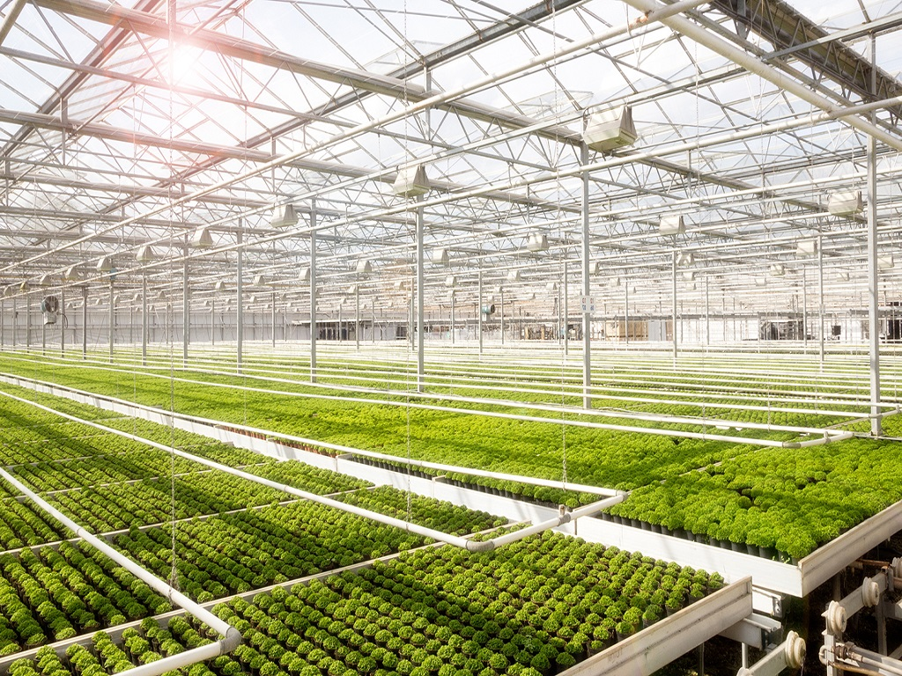
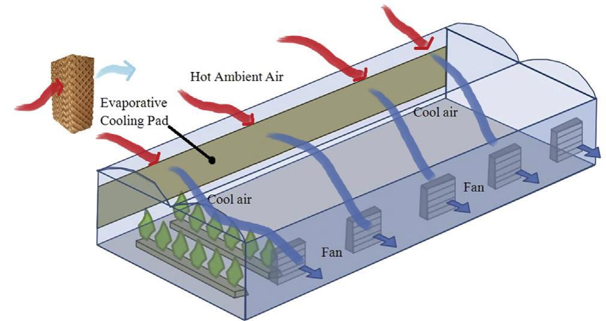

Natural ventilation systems facilitate cross ventilation (using side wall and roof vents) in the greenhouse. Six naturally ventilated poly houses provided with fogger and drip irrigation in an area of 580 m2 each were established for cultivation of different vegetables and flowers such as capsicum, cucumber, tomato, chrysanthemum, marigold, rose, gerbera and carnations.
Fan and pad systems consist of exhaust fans at one end of the greenhouse and a pump circulating water through and over a porous pad installed at the opposite end of the greenhouse.Three climate-controlled fan and pad polyhouses of 580 m2 each with motorized side ventilation operating system were established to raise off-season vegetables. One of the structures established is ear-marked for production of chrysanthemum flowers throughout the year by providing artificial light. The structures can be used for raising high value vegetables like lettuce, chives, broccoli, brussels sprout, red cabbage, cucumber etc.
The use of insect - proof screens is to avoid or limit the entrance of insects, decreases the efficiency of ventilation. The type of screen used will depend on the insects to be excluded, for example, thrips require the finest sized screen. Generally, net sizes of 40-mesh, 52-mesh and 78-mesh are used.
| Year | Particulars | Crop |
|---|---|---|
| 2016-2017 | No.of Seedlings | Tomato |